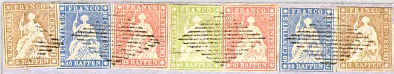
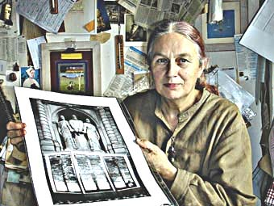
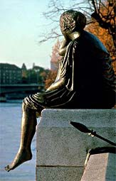
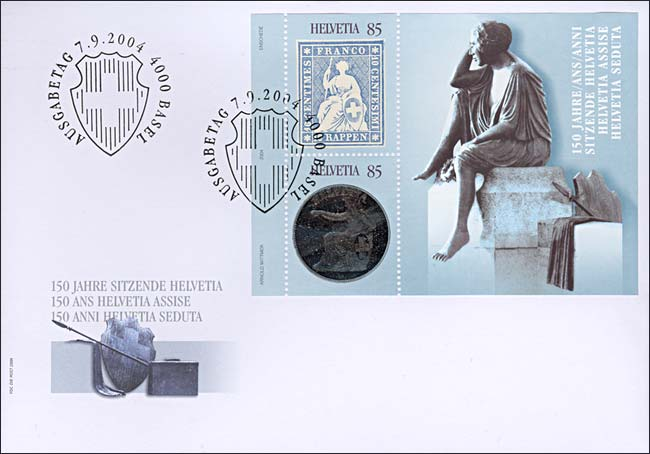
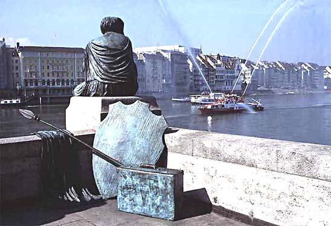
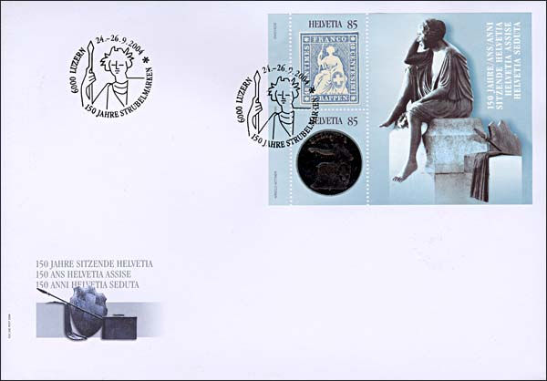
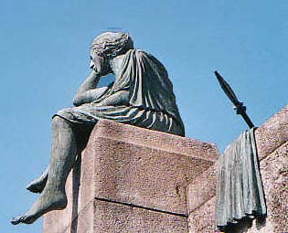
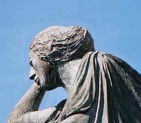

|
Created 1/02/05. Revised:
01/04/05. Copyright © 2005 by Victor Manta, Switzerland. All rights reserved worldwide. |
|
150 Years of Strubeli
Sitting Helvetia Miniature Sheet
On the 7th of November 2004 the Swiss Post has issued a miniature sheet that admirably ties a major philatelic commemoration with the world of art. This page is a modest tribute to all persons, known and anonymous, who contributed to the creation of this philatelic masterwork.
To this day, the word “Helvetia” – the Latin name for Switzerland, features on all Swiss stamps and coins. From very early times, the name Helvetia was also used to describe the allegorical female figure that personified the Swiss State. With the founding of the Swiss federal State in 1848, Helvetia was given a central position as the uniting and protective Mother of the Nation, “starring” on Swiss stamps from 1854 to 1942, and on Swiss coins right up until the present.

On the coins, we find the Mother of the Nation, with her arm outstretched, both to protect and to distribute largesse, as well as in an apparent attempt to appease her people. The figure on the stamp looks totally different. This full-face representation of Helvetia, complete with spear and laurel wreath, seated on a spur of rock in the immovable Swiss Alps, symbolizes the freedom, independence and strength of the new Switzerland in the mid-19th century, at a time when world politics were in turmoil. While the figure on the coin is clearly intended for “domestic consumption”, the stamp motif was designed to carry a message beyond Switzerland's borders too.
The stamps had no perforations, so had to be cut out of the sheet. In many cases, the new stamps were not cleanly and clearly printed, so the victor’s crown of laurels on Helvetia’s head is virtually unrecognizable as such, looking more like a tousled hairstyle. As a result, this stamp issue came to be known affectionately (and unofficially) in German-speaking Switzerland as “Strubel” or “Strubeli” (disheveled or unkempt; read as Shtrubeli in English), while French-speaking Swiss refer to it somewhat more prosaically as “les Rappen”, on the basis of the text in the frame beneath the figure. The validity of the “Strubel” stamps began on 15 September 1854 and ended on 31 July 1863, when they were replaced by perforated stamps. During this period, seven different face values – ranging from 2 Rappen (centimes) to 1 franc – were issued.
|
 |
 |
“Helvetia auf Reisen” (Helvetia on her travels), as created by artist Bettina Eichin in 1979/1980, constitutes a major contrast to the figures on the coins and stamps. Eichin’s Helvetia has put the heroic behind her, casting aside her shield and spear, and turned her back on the public, as though deep in thought about the past 150 years. The plaque on this bronze statue reveals that this Helvetia has escaped from the confines of the mould and gone on a trip round Switzerland in the closing decades of the 20th century. On her travels, she also comes to Basel where she “rests on a pillar of the middle Rhine Bridge and looks thoughtfully down the Rhine."

The FDC cancel shows Helvetia's shield, as it appears as well on the Strubeli stamps as on the actual Swiss coins.

The picture taken from the back of the statue displays as well Helvetia's shield and spear, as her traveling suitcase, that were put to rest for eternity.

The above cover was cancelled at the Sitting Helvetia Jubilee Exhibition in Lucerne, Switzerland, 24-26 September 2004. Helvetia, as expected, looks unkempt on the exhibition's cancel too.
|
 |
 |
During their brief life of just under nine years, the “Strubel” stamps had an eventful existence, with different printing, paper, silk colors, uses, tariff rules and cancellation guidelines. Thus, it is hardly surprising that virtually no two “Strubel” collections look alike. As a result, collectors have still today the full freedom to build up their display in line with their personal preferences. These valuable Swiss cultural icons, even if issued 150 years ago, stay very affordable. Of the total issue of a good 60 million “Strubel” stamps, roughly five per cent probably escaped destruction and will continue to thrill many collectors in future too. (After: Focus on Stamps, 3/2004).
Link: Swiss sculpture museum.
|
Created 1/02/05. Revised:
01/04/05. Copyright © 2005 by Victor Manta, Switzerland. All rights reserved worldwide. |
|